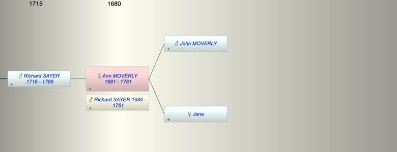

| [Index] |
| Ann MOVERLY (1681 - 1761) |
|  |
| b. 1681 at St Laurence |
| m. Richard SAYER (1684 - 1761) |
| d. 1761 at St Laurence aged 80 |
| Parents: |
| John MOVERLY |
| Jane |
| Siblings (4): |
| Jane MOVERLY |
| Jeremiah MOVERLY |
| John MOVERLY |
| William MOVERLY |
| Children (1): |
| Richard SAYER (1716 - 1786) |
| Grandchildren (4): |
| Richard SAYER (1748 - 1749), George Osborn SAYER (1751 - ), Emblen SAYER (1752 - 1752), Richard SAYER (1759 - 1833) |
| Events in Ann MOVERLY (1681 - 1761)'s life | |||||
| Date | Age | Event | Place | Notes | Src |
| Married Richard SAYER | Note 1 | ||||
| 1681 | Ann MOVERLY was born | St Laurence | Note 2 | ||
| abt 1716 | 35 | Birth of son Richard SAYER | St Laurence | Note 3 | |
| 1761 | 80 | Ann MOVERLY died | St Laurence | Note 4 | |
| 1761 | 80 | Death of husband Richard SAYER (aged 77) | St Laurence | Note 5 | |
| Created on a Mac™ using iFamily for Mac™ on 8 Oct 2023 |